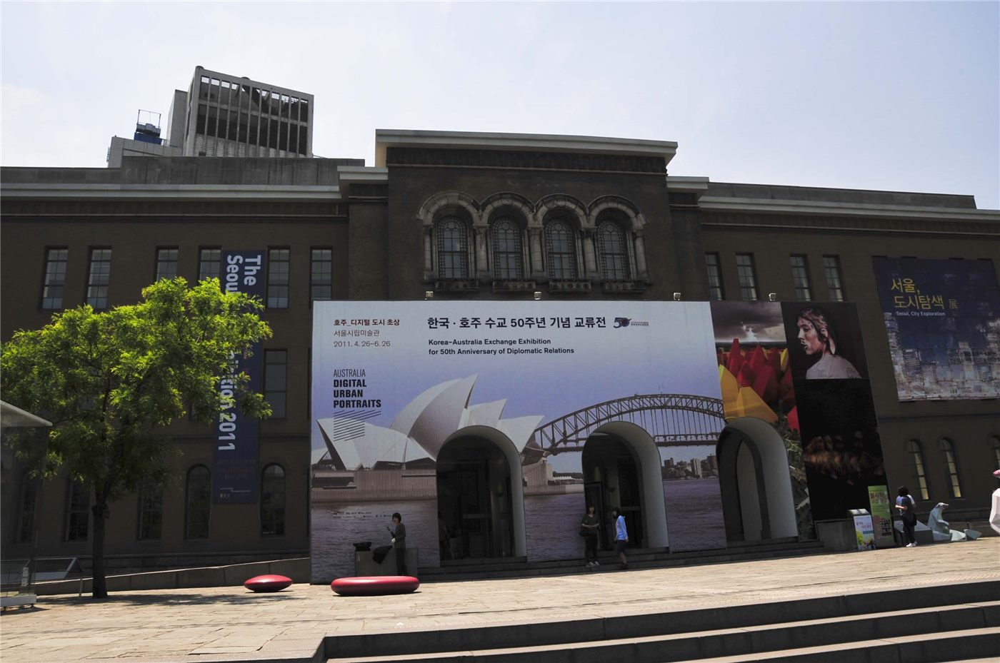

부산화교중고, 제6회 부산 학생 서예제 수상자 명단 발표
부산화교중고등학교가 제6회 부산 학생 서예제에서 수상한 재학생 명단을 공고했다. 서예는 화교 학교 교육과정에서 언어 교육과 함께 이어져 온 영역이다.
마약란 기자 · 2026.09.04
橋화인소식

부산화교중고등학교가 제6회 부산 학생 서예제 수상자 명단을 학교 게시판에 공고했다.
광고 문의 · 300×250서예는 화교 학교의 교육과정에서 오랫동안 자리를 지켜 온 과목이다. 한자를 쓰는 훈련이 언어 학습과 직접 연결되기 때문에, 문화 활동인 동시에 학습 활동의 성격을 갖는다.
지역 단위 서예 대회에 화교 학교 학생이 참가하는 것은 학교 밖 사회와 접점을 만드는 방식이기도 하다. 한국 학생들과 같은 무대에서 평가받는 경험이 쌓인다.
학교 입장에서 수상 명단 공고는 재학생과 학부모에 대한 안내이자, 교육과정 운영을 대외적으로 보여주는 자료다. 신입생 모집 시기와 맞물리면 학교 선택의 참고 정보가 되기도 한다.
화교 학교는 한국의 정규 학교와 학력 인정 체계가 다른 경우가 있어, 진학 경로를 미리 확인하는 것이 중요하다. 대만·중국 대학 진학, 한국 대학 외국인 전형 등 경로가 나뉜다.
학부모가 확인해 둘 실무 사항은 대회 일정과 지도 교사 연락처, 그리고 향후 대회 참가 신청 절차다.
본지는 학교 공고를 사실대로 전한다. 수상자 개인의 신상 정보는 다루지 않는다.
출처·참고 (사실 확인용 — 본문은 직접 재작성)
· http://www.hwakyo.or.kr/
· http://www.hwakyo.or.kr/